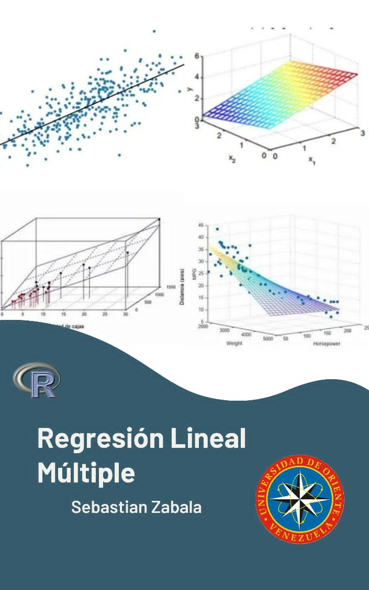

Regresión Lineal múltiple
2024-02-22
Prólogo
Este libro es una guía para la enseñanza del análisis de regresión por medio del modelo lineal múltiple aplicado con el lenguaje de programación R.
Este mismo libro ha sido escrito en R-Markdown empleando el paquete bookdown y está disponible en el repositorio Github:
Para generar el libro (compilar) puede ser recomendable instalar la última versión de RStudio y la versión de desarrollo de bookdown disponible en Github.
Esta obra está bajo una licencia de Creative Commons Reconocimiento-CompartirIgual 4.0 Internacional.
